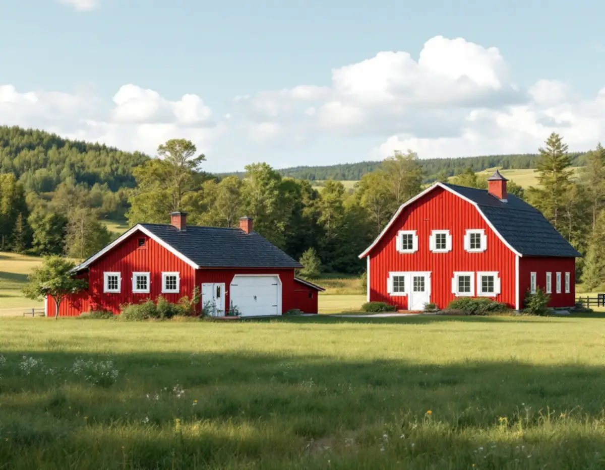
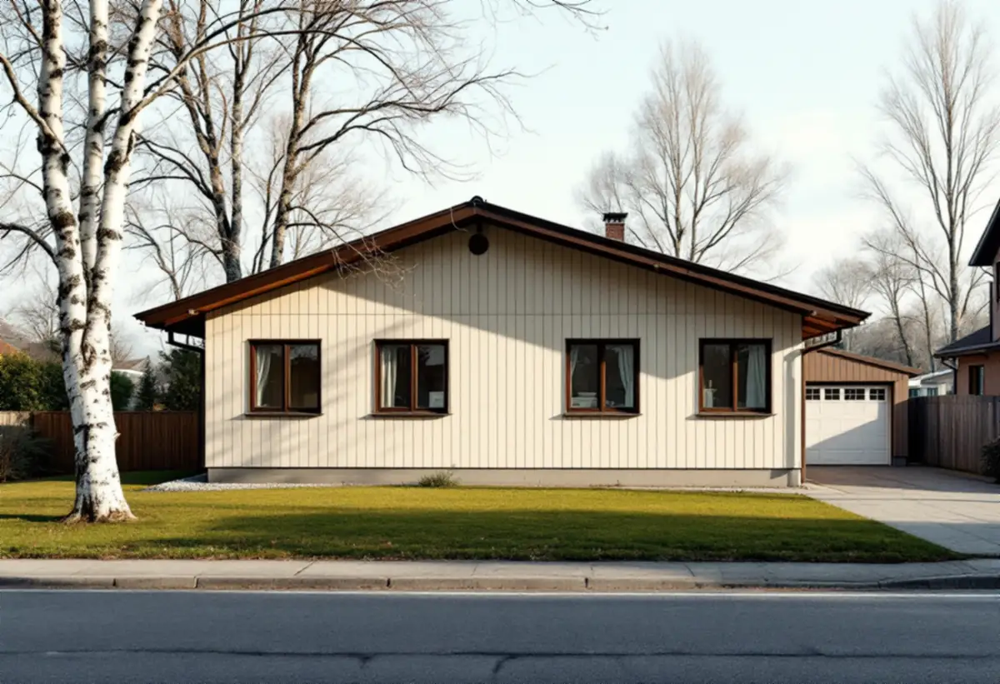

Platsbesök
Vi tittar på alla byggnader som ska målas och gör skrapprov för att se om det är slamfärg, oljefärg eller modern täckfärg.
I Vallentuna kan samma målare ena veckan stryka rödfärg på en gård i odlingslandskapet och nästa vecka måla om ett radhus i Ormsta. Ommålning av ett en- eller tvåbostadshus kräver normalt inget lov här – utom i kommunens kulturhistoriskt särskilt värdefulla miljöer. Geal Entreprenad AB tar målningsuppdrag i hela kommunen, med gratis platsbesök och skriftligt kostnadsförslag.

Tätorten fick sin station när järnvägen mellan Stockholm och Rimbo öppnade 1885, men de flesta villorna är betydligt yngre. Enligt SCB bodde 3 516 personer i tätorten 1960, 8 823 år 1970 och hela 18 435 år 1980. Befolkningen femdubblades alltså på tjugo år, och många villor och radhus i tätorten är från just den perioden. Det betyder ofta liknande panel, liknande fönster och ungefär samma underhållsbehov.
Lindholmen längre norrut på Roslagsbanan har vuxit fram huvudsakligen sedan 1970-talet, med villor och gruppbyggda småhus. I Karby och Brottby vid E18 ligger den äldre bebyggelsen i små grupper på höjderna.
Utanför tätorterna finns gårdar med bostadshus och ekonomibyggnader, och fritidshusområden som enligt översiktsplanen i de flesta fall har omvandlats till permanentboende sedan 1990-talet. Garns-Ekskogen har omkring 500 bebyggda fastigheter, medan Lövsättra stugby ska behålla sin fritidsprägel.

Riksantikvarieämbetet beskriver hur rödfärgen under 1800-talet blev landsbygdens husfärg och att röd slamfärg fortfarande räknas till de bästa utomhusfärgerna för trähus. Färgen består av mjölklister, vatten, järnvitriol och pigment, ibland med en liten tillsats linolja. Den är matt, släpper igenom fukt och fäster bra på ohyvlat virke men sämre på hyvlat.
Slamfärg beskrivs som den i särklass mest underhållsvänliga färgtypen: det räcker att borsta bort lös färg och stryka på nytt. Men den fungerar bara på sig själv. Enligt myndigheten ska en slamfärgad yta inte målas över med någon annan färgtyp, och har man en gång gått över till exempelvis latex-, alkyd- eller linoljefärg går det inte att återgå till slamfärg ens om den gamla färgen tas bort. Det finns också produkter som påminner om rödfärg men har andra bindemedel, så innehållsförteckningen bör läsas noga.
Kulören kan skilja något mellan olika tillverkare, vilket märks när bara en del av en byggnad målas. På en gård med flera hus är det därför en fördel att stryka allt med samma färg i samma omgång.
Ett fritidshus som byggts om till helårsbostad har ofta målats i flera omgångar och med olika produkter, och tillbyggnader kan ha fått en annan panel än originalet. Innan något nytt stryks över behöver man veta vad som redan sitter på. Riksantikvarieämbetet påpekar att ny färg över mycket fet oljefärg lätt ger blåsor, särskilt på fasader mot söder. Byggs huset till eller får nya fönster samtidigt kan målningen samordnas med tillbyggnaden så att ställningen bara behöver resas en gång.
Villorna i Ormsta och Bällsta har oftast en modern täckfärg som kan målas över med samma typ, men efter flera decennier kan panelen ha rötskador nertill och vid fönsterbleck. De byts innan målningen börjar. Inomhus är det ofta tak och väggar i ursprungliga rum som ska fräschas upp, i kombination med en större renovering av kök eller badrum.
Vallentuna kommun skriver att ommålning, nytt tak eller nya fönster på ett en- eller tvåbostadshus inte kräver bygglov, men att ändringar ska göras varsamt och anpassas till byggnadens värden. Lov krävs däremot om fastigheten ligger inom ett kulturhistoriskt särskilt värdefullt område eller om byggnaden själv är kulturhistoriskt särskilt värdefull. Det stämmer med Boverkets beskrivning av reglerna från 1 december 2025. Boverket påpekar dessutom att ett byte av färgtyp, till exempel från slamfärg till silikonhartsfärg, inte räknas som kulörbyte men kan bedömas påverka husets yttre karaktärsdrag.
Översiktsplan 2040 räknade upp fem riksintressen för kulturmiljövården. Efter Länsstyrelsens översyn har Kårsta utgått, och kvar finns Skålhamravägen, Markim-Orkesta, Frösunda sockencentrum och Vada-Össeby-Garn längs Långhundraleden, enligt kommunens planeringsstrategi. Kommunens kulturmiljöprogram pekar dessutom ut områden med höga eller mycket höga kulturhistoriska kvaliteter, till exempel delar av Markim, Lingsbergsvägen och Lindholmen.
Krävs lov ska ansökan bland annat innehålla fasadritningar i skala 1:100 och en redovisning av utvändiga material och kulörer med NCS-koder. Äldre ritningar kan beställas från kommunens arkiv om de finns.
Gårdarna i Karby och Brottby ligger enligt kommunen i ett småskaligt landskap av skogsklädda kullar och öppen åker- och ängsmark. Ett hus som står fritt i odlingslandskapet är mer utsatt för väder än en villa i tätorten, så det lönar sig att se extra noga på gavlar, vindskivor och fönster mot de öppna fälten. Linoljefärg kräver varmt och torrt väder – Riksantikvarieämbetet anger maj till augusti – medan slamfärg är mer förlåtande men inte bör strykas för tjockt.
Vi tittar på alla byggnader som ska målas och gör skrapprov för att se om det är slamfärg, oljefärg eller modern täckfärg.
Ligger fastigheten i ett riksintresse eller ett område med höga kulturhistoriska kvaliteter stämmer vi av med kommunen.
Underarbete, färgtyp och antal strykningar per byggnad, så att du kan välja vad som görs först.
Borstning eller skrapning, tvätt och byte av rötskadat trä.
Färgen stryks i den ordning och med de torktider som färgtypen kräver.
Vi går igenom resultatet tillsammans och bättrar där det behövs.
På ett småhus räknar Skatteverket målning av fasader, fönster, väggar, tak och golv samt tapetsering som rotarbete. Målning av staket och murar ger inget avdrag. Avdraget är 30 procent av arbetskostnaden, högst 50 000 kr per person och år, och ROT och RUT får tillsammans vara högst 75 000 kr. Färgen är material och ingår inte.
Ska ekonomibyggnader på en gård målas, fråga om rotavdraget innan arbetet börjar. Geal drar avdraget direkt på fakturan där det gäller.
Kostnaden beror på hur många byggnader som ingår, hur höga gavlarna är, hur mycket gammal färg som måste bort och hur mycket trä som behöver bytas. På landsbygden spelar även framkomlighet och var ställningen kan stå in. Vi gör ett gratis platsbesök och lämnar ett skriftligt kostnadsförslag.
Fasad, fönster och invändig målning.
Målare i Stockholm →Takbyte, takbesiktning och plåtarbeten.
Takläggare i Vallentuna →Villaområden och gårdar.
Takrenovering i Vallentuna →Inom eller utanför plan, avlopp och brunn.
Attefallshus i Vallentuna →Nytt våtrum, Roslagsvatten och egen brunn.
Badrumsrenovering i Vallentuna →Ritningar, grannar och kommunens mark.
Byggföretag i Vallentuna →Villor och grupphus från 1970-talet och framåt.
Fasadmålning i Vallentuna →Fritidshus, stationssamhällen och villor i Vallentuna.
Fasadrenovering i Vallentuna →Flygbuller, glasval och lov i Vallentuna.
Fönsterbyte i Vallentuna →Fönster i tegelvillan, fog och bågar.
Fönsterrenovering i Vallentuna →Golv på platta och golvvärme i villan.
Golvläggare i Vallentuna →Slipa och laga gamla golvplank.
Golvslipning i Vallentuna →Utbyggda kök, villor och gårdar.
Köksrenovering i Vallentuna →Rännor, plåttak och uthus i Vallentuna.
Plåtslagare i Vallentuna →Uthus, uterum och fritidshus.
Snickare i Vallentuna →Lovfrågan, skorstenen och arkivet.
Takbyte i Vallentuna →Spännpapp och papperstapet.
Tapetsering i Vallentuna →Ritningar, nivåer och arkivet.
Tillbyggnad i Vallentuna →Radon när huset byggs om.
Totalrenovering i Vallentuna →